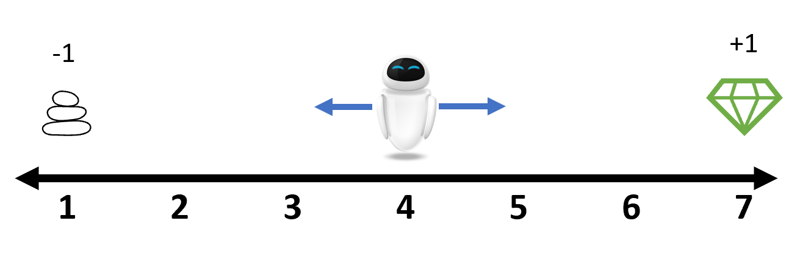

Tutorial
One-dimensional Random Walk
Suppose that an agent is placed at the position 4 on the following number line. At each step, it can either move left or right. Here we use the integer 1 and 2 to represent them respectively. Whenever it reaches the end of the line, the game is terminated. A reward of +1 is received if it stops at position 7 and a punishment of -1 is received if it stops at position 1. In other cases, the reward is 0.

This environment is already provided as RandomWalk1D. Let's get familiar with some basic interfaces first.
julia> using ReinforcementLearning
julia> env = RandomWalk1D()
# RandomWalk1D
## Traits
| Trait Type | Value |
|:----------------- | --------------------:|
| NumAgentStyle | SingleAgent() |
| DynamicStyle | Sequential() |
| InformationStyle | PerfectInformation() |
| ChanceStyle | Deterministic() |
| RewardStyle | TerminalReward() |
| UtilityStyle | GeneralSum() |
| ActionStyle | MinimalActionSet() |
| StateStyle | Observation{Int64}() |
| DefaultStateStyle | Observation{Int64}() |
## Is Environment Terminated?
No
## Action Space
`Base.OneTo(2)`
julia> S = state_space(env)
Base.OneTo(7)
julia> s = state(env) # the initial position
4
julia> A = action_space(env)
Base.OneTo(2)
julia> is_terminated(env)
false
julia> while true
env(rand(A))
is_terminated(env) && break
end
julia> state(env)
1
julia> reward(env)
-1.0You can find more detailed explanation of the functions used above at ReinforcementLearningBase.jl.
In this simple game, we are interested in finding out an optimum policy for the agent to gain the maximum cumulative reward in an episode. The random selection policy above is a good benchmark. The only thing left is to calculate the total reward. Because such workflow is so common in reinforcement learning tasks, an extended Base.run function is provided so that we can desgin the workflow in a descriptive pattern.
julia> run(
RandomPolicy(),
RandomWalk1D(),
StopAfterEpisode(10),
TotalRewardPerEpisode()
)
Total reward per episode
┌────────────────────────────────────────┐
1 │⠀⠀⠀⠀⠀⠀⠀⠀⢸⠉⠉⠉⠉⢇⠀⠀⠀⠀⠀⠀⠀⠀⠀⠀⠀⠀⣸⠀⠀⠀⠀⠀⠀⠀⠀⣾⠀⠀⠀⠀│
│⠀⠀⠀⠀⠀⠀⠀⠀⡜⠀⠀⠀⠀⢸⠀⠀⠀⠀⠀⠀⠀⠀⠀⠀⠀⠀⡏⡆⠀⠀⠀⠀⠀⠀⠀⡟⡄⠀⠀⠀│
│⠀⠀⠀⠀⠀⠀⠀⠀⡇⠀⠀⠀⠀⠈⡆⠀⠀⠀⠀⠀⠀⠀⠀⠀⠀⢰⠁⡇⠀⠀⠀⠀⠀⠀⢸⠀⡇⠀⠀⠀│
│⠀⠀⠀⠀⠀⠀⠀⢰⠁⠀⠀⠀⠀⠀⡇⠀⠀⠀⠀⠀⠀⠀⠀⠀⠀⢸⠀⢸⠀⠀⠀⠀⠀⠀⡸⠀⢱⠀⠀⠀│
│⠀⠀⠀⠀⠀⠀⠀⡸⠀⠀⠀⠀⠀⠀⢸⠀⠀⠀⠀⠀⠀⠀⠀⠀⠀⡇⠀⠸⡀⠀⠀⠀⠀⠀⡇⠀⢸⠀⠀⠀│
│⠀⠀⠀⠀⠀⠀⠀⡇⠀⠀⠀⠀⠀⠀⠸⡀⠀⠀⠀⠀⠀⠀⠀⠀⢀⠇⠀⠀⡇⠀⠀⠀⠀⢠⠃⠀⠀⡇⠀⠀│
│⠀⠀⠀⠀⠀⠀⢠⠃⠀⠀⠀⠀⠀⠀⠀⡇⠀⠀⠀⠀⠀⠀⠀⠀⢸⠀⠀⠀⢱⠀⠀⠀⠀⢸⠀⠀⠀⢇⠀⠀│
Score │⠤⠤⠤⠤⠤⠤⢼⠤⠤⠤⠤⠤⠤⠤⠤⢧⠤⠤⠤⠤⠤⠤⠤⠤⡼⠤⠤⠤⢼⠤⠤⠤⠤⡧⠤⠤⠤⢼⠤⠤│
│⠀⠀⠀⠀⠀⠀⡎⠀⠀⠀⠀⠀⠀⠀⠀⢸⠀⠀⠀⠀⠀⠀⠀⠀⡇⠀⠀⠀⠀⡇⠀⠀⢀⠇⠀⠀⠀⠈⡆⠀│
│⠀⠀⠀⠀⠀⠀⡇⠀⠀⠀⠀⠀⠀⠀⠀⠀⡇⠀⠀⠀⠀⠀⠀⢸⠀⠀⠀⠀⠀⢇⠀⠀⢸⠀⠀⠀⠀⠀⡇⠀│
│⠀⠀⠀⠀⠀⢸⠀⠀⠀⠀⠀⠀⠀⠀⠀⠀⢇⠀⠀⠀⠀⠀⠀⡸⠀⠀⠀⠀⠀⢸⠀⠀⡜⠀⠀⠀⠀⠀⢸⠀│
│⠀⠀⠀⠀⠀⡜⠀⠀⠀⠀⠀⠀⠀⠀⠀⠀⢸⠀⠀⠀⠀⠀⠀⡇⠀⠀⠀⠀⠀⠘⡄⠀⡇⠀⠀⠀⠀⠀⠸⡀│
│⠀⠀⠀⠀⠀⡇⠀⠀⠀⠀⠀⠀⠀⠀⠀⠀⠘⡄⠀⠀⠀⠀⢠⠃⠀⠀⠀⠀⠀⠀⡇⢸⠀⠀⠀⠀⠀⠀⠀⡇│
│⠀⠀⠀⠀⢰⠁⠀⠀⠀⠀⠀⠀⠀⠀⠀⠀⠀⡇⠀⠀⠀⠀⢸⠀⠀⠀⠀⠀⠀⠀⢸⡸⠀⠀⠀⠀⠀⠀⠀⢣│
-1 │⣀⣀⣀⣀⣸⠀⠀⠀⠀⠀⠀⠀⠀⠀⠀⠀⠀⢱⣀⣀⣀⣀⡎⠀⠀⠀⠀⠀⠀⠀⠸⡇⠀⠀⠀⠀⠀⠀⠀⢸│
└────────────────────────────────────────┘
1 10
Episode
TotalRewardPerEpisode([-1.0, -1.0, 1.0, 1.0, -1.0, -1.0, 1.0, -1.0, 1.0, -1.0], 0.0, true)The RandomPolicy simply draws a random element from the legal action set at each step. Beyond that, we can also set the action at each position ahead of time by using a TabularPolicy.
julia> NS, NA = length(S), length(A)
(7, 2)
julia> policy = TabularPolicy(;table=Dict(zip(1:NS, fill(2, NS))))
typename(TabularPolicy)
├─ table => typename(Dict)
└─ n_action => typename(Nothing)
julia> run(
policy,
RandomWalk1D(),
StopAfterEpisode(10),
TotalRewardPerEpisode()
)
Total reward per episode
┌────────────────────────────────────────┐
2 │⠀⠀⠀⠀⠀⠀⠀⠀⠀⠀⠀⠀⠀⠀⠀⠀⠀⠀⠀⠀⠀⠀⠀⠀⠀⠀⠀⠀⠀⠀⠀⠀⠀⠀⠀⠀⠀⠀⠀⠀│
│⠀⠀⠀⠀⠀⠀⠀⠀⠀⠀⠀⠀⠀⠀⠀⠀⠀⠀⠀⠀⠀⠀⠀⠀⠀⠀⠀⠀⠀⠀⠀⠀⠀⠀⠀⠀⠀⠀⠀⠀│
│⠀⠀⠀⠀⠀⠀⠀⠀⠀⠀⠀⠀⠀⠀⠀⠀⠀⠀⠀⠀⠀⠀⠀⠀⠀⠀⠀⠀⠀⠀⠀⠀⠀⠀⠀⠀⠀⠀⠀⠀│
│⠀⠀⠀⠀⠀⠀⠀⠀⠀⠀⠀⠀⠀⠀⠀⠀⠀⠀⠀⠀⠀⠀⠀⠀⠀⠀⠀⠀⠀⠀⠀⠀⠀⠀⠀⠀⠀⠀⠀⠀│
│⠀⠀⠀⠀⠀⠀⠀⠀⠀⠀⠀⠀⠀⠀⠀⠀⠀⠀⠀⠀⠀⠀⠀⠀⠀⠀⠀⠀⠀⠀⠀⠀⠀⠀⠀⠀⠀⠀⠀⠀│
│⠀⠀⠀⠀⠀⠀⠀⠀⠀⠀⠀⠀⠀⠀⠀⠀⠀⠀⠀⠀⠀⠀⠀⠀⠀⠀⠀⠀⠀⠀⠀⠀⠀⠀⠀⠀⠀⠀⠀⠀│
│⠀⠀⠀⠀⠀⠀⠀⠀⠀⠀⠀⠀⠀⠀⠀⠀⠀⠀⠀⠀⠀⠀⠀⠀⠀⠀⠀⠀⠀⠀⠀⠀⠀⠀⠀⠀⠀⠀⠀⠀│
Score │⠤⠤⠤⠤⠤⠤⠤⠤⠤⠤⠤⠤⠤⠤⠤⠤⠤⠤⠤⠤⠤⠤⠤⠤⠤⠤⠤⠤⠤⠤⠤⠤⠤⠤⠤⠤⠤⠤⠤⠤│
│⠀⠀⠀⠀⠀⠀⠀⠀⠀⠀⠀⠀⠀⠀⠀⠀⠀⠀⠀⠀⠀⠀⠀⠀⠀⠀⠀⠀⠀⠀⠀⠀⠀⠀⠀⠀⠀⠀⠀⠀│
│⠀⠀⠀⠀⠀⠀⠀⠀⠀⠀⠀⠀⠀⠀⠀⠀⠀⠀⠀⠀⠀⠀⠀⠀⠀⠀⠀⠀⠀⠀⠀⠀⠀⠀⠀⠀⠀⠀⠀⠀│
│⠀⠀⠀⠀⠀⠀⠀⠀⠀⠀⠀⠀⠀⠀⠀⠀⠀⠀⠀⠀⠀⠀⠀⠀⠀⠀⠀⠀⠀⠀⠀⠀⠀⠀⠀⠀⠀⠀⠀⠀│
│⠀⠀⠀⠀⠀⠀⠀⠀⠀⠀⠀⠀⠀⠀⠀⠀⠀⠀⠀⠀⠀⠀⠀⠀⠀⠀⠀⠀⠀⠀⠀⠀⠀⠀⠀⠀⠀⠀⠀⠀│
│⠀⠀⠀⠀⠀⠀⠀⠀⠀⠀⠀⠀⠀⠀⠀⠀⠀⠀⠀⠀⠀⠀⠀⠀⠀⠀⠀⠀⠀⠀⠀⠀⠀⠀⠀⠀⠀⠀⠀⠀│
│⠀⠀⠀⠀⠀⠀⠀⠀⠀⠀⠀⠀⠀⠀⠀⠀⠀⠀⠀⠀⠀⠀⠀⠀⠀⠀⠀⠀⠀⠀⠀⠀⠀⠀⠀⠀⠀⠀⠀⠀│
0 │⠀⠀⠀⠀⠀⠀⠀⠀⠀⠀⠀⠀⠀⠀⠀⠀⠀⠀⠀⠀⠀⠀⠀⠀⠀⠀⠀⠀⠀⠀⠀⠀⠀⠀⠀⠀⠀⠀⠀⠀│
└────────────────────────────────────────┘
1 10
Episode
TotalRewardPerEpisode([1.0, 1.0, 1.0, 1.0, 1.0, 1.0, 1.0, 1.0, 1.0, 1.0], 0.0, true)Next, let's introduce one of the most common policies, the QBasedPolicy. It contains two parts, a state-action value function to estimate the estimated value of each state-action pair and an explorer to select which action to take based on the result of the state-action values.
julia> using Flux: InvDecay
julia> policy = QBasedPolicy(
learner = MonteCarloLearner(;
approximator=TabularQApproximator(
;n_state = NS,
n_action = NA,
opt = InvDecay(1.0)
)
),
explorer = EpsilonGreedyExplorer(0.1)
)
typename(QBasedPolicy)
├─ learner => typename(MonteCarloLearner)
│ ├─ approximator => typename(TabularApproximator)
│ │ ├─ table => 2×7 Matrix{Float64}
│ │ └─ optimizer => typename(Flux.Optimise.InvDecay)
│ │ ├─ gamma => 1.0
│ │ └─ state => typename(IdDict)
│ ├─ γ => 1.0
│ ├─ kind => typename(ReinforcementLearningZoo.FirstVisit)
│ └─ sampling => typename(ReinforcementLearningZoo.NoSampling)
└─ explorer => typename(EpsilonGreedyExplorer)
├─ ϵ_stable => 0.1
├─ ϵ_init => 1.0
├─ warmup_steps => 0
├─ decay_steps => 0
├─ step => 1
├─ rng => typename(Random._GLOBAL_RNG)
└─ is_training => trueHere we choose the MonteCarloLearner and the EpsilonGreedyExplorer. But you can also replace them with some other Q value learners or value explorers. Similar to what we did before, we can apply this policy to the env to estimate its performance.
julia> run(
policy,
RandomWalk1D(),
StopAfterEpisode(10),
TotalRewardPerEpisode()
)
Total reward per episode
┌────────────────────────────────────────┐
0 │⠀⠀⠀⠀⠀⠀⠀⠀⠀⠀⠀⠀⠀⠀⠀⠀⠀⠀⠀⠀⠀⠀⠀⠀⠀⠀⠀⠀⠀⠀⠀⠀⠀⠀⠀⠀⠀⠀⠀⠀│
│⠀⠀⠀⠀⠀⠀⠀⠀⠀⠀⠀⠀⠀⠀⠀⠀⠀⠀⠀⠀⠀⠀⠀⠀⠀⠀⠀⠀⠀⠀⠀⠀⠀⠀⠀⠀⠀⠀⠀⠀│
│⠀⠀⠀⠀⠀⠀⠀⠀⠀⠀⠀⠀⠀⠀⠀⠀⠀⠀⠀⠀⠀⠀⠀⠀⠀⠀⠀⠀⠀⠀⠀⠀⠀⠀⠀⠀⠀⠀⠀⠀│
│⠀⠀⠀⠀⠀⠀⠀⠀⠀⠀⠀⠀⠀⠀⠀⠀⠀⠀⠀⠀⠀⠀⠀⠀⠀⠀⠀⠀⠀⠀⠀⠀⠀⠀⠀⠀⠀⠀⠀⠀│
│⠀⠀⠀⠀⠀⠀⠀⠀⠀⠀⠀⠀⠀⠀⠀⠀⠀⠀⠀⠀⠀⠀⠀⠀⠀⠀⠀⠀⠀⠀⠀⠀⠀⠀⠀⠀⠀⠀⠀⠀│
│⠀⠀⠀⠀⠀⠀⠀⠀⠀⠀⠀⠀⠀⠀⠀⠀⠀⠀⠀⠀⠀⠀⠀⠀⠀⠀⠀⠀⠀⠀⠀⠀⠀⠀⠀⠀⠀⠀⠀⠀│
│⠀⠀⠀⠀⠀⠀⠀⠀⠀⠀⠀⠀⠀⠀⠀⠀⠀⠀⠀⠀⠀⠀⠀⠀⠀⠀⠀⠀⠀⠀⠀⠀⠀⠀⠀⠀⠀⠀⠀⠀│
Score │⠤⠤⠤⠤⠤⠤⠤⠤⠤⠤⠤⠤⠤⠤⠤⠤⠤⠤⠤⠤⠤⠤⠤⠤⠤⠤⠤⠤⠤⠤⠤⠤⠤⠤⠤⠤⠤⠤⠤⠤│
│⠀⠀⠀⠀⠀⠀⠀⠀⠀⠀⠀⠀⠀⠀⠀⠀⠀⠀⠀⠀⠀⠀⠀⠀⠀⠀⠀⠀⠀⠀⠀⠀⠀⠀⠀⠀⠀⠀⠀⠀│
│⠀⠀⠀⠀⠀⠀⠀⠀⠀⠀⠀⠀⠀⠀⠀⠀⠀⠀⠀⠀⠀⠀⠀⠀⠀⠀⠀⠀⠀⠀⠀⠀⠀⠀⠀⠀⠀⠀⠀⠀│
│⠀⠀⠀⠀⠀⠀⠀⠀⠀⠀⠀⠀⠀⠀⠀⠀⠀⠀⠀⠀⠀⠀⠀⠀⠀⠀⠀⠀⠀⠀⠀⠀⠀⠀⠀⠀⠀⠀⠀⠀│
│⠀⠀⠀⠀⠀⠀⠀⠀⠀⠀⠀⠀⠀⠀⠀⠀⠀⠀⠀⠀⠀⠀⠀⠀⠀⠀⠀⠀⠀⠀⠀⠀⠀⠀⠀⠀⠀⠀⠀⠀│
│⠀⠀⠀⠀⠀⠀⠀⠀⠀⠀⠀⠀⠀⠀⠀⠀⠀⠀⠀⠀⠀⠀⠀⠀⠀⠀⠀⠀⠀⠀⠀⠀⠀⠀⠀⠀⠀⠀⠀⠀│
│⠀⠀⠀⠀⠀⠀⠀⠀⠀⠀⠀⠀⠀⠀⠀⠀⠀⠀⠀⠀⠀⠀⠀⠀⠀⠀⠀⠀⠀⠀⠀⠀⠀⠀⠀⠀⠀⠀⠀⠀│
-2 │⠀⠀⠀⠀⠀⠀⠀⠀⠀⠀⠀⠀⠀⠀⠀⠀⠀⠀⠀⠀⠀⠀⠀⠀⠀⠀⠀⠀⠀⠀⠀⠀⠀⠀⠀⠀⠀⠀⠀⠀│
└────────────────────────────────────────┘
1 10
Episode
TotalRewardPerEpisode([-1.0, -1.0, -1.0, -1.0, -1.0, -1.0, -1.0, -1.0, -1.0, -1.0], 0.0, true)Until now, the policies we've seen are very simple ones. There're no optimizations involved in these policies. We call that they are in the actor mode, which means they only generate actions statically at each step. However, our main goal in reinforcement learning is to improve our policy during the interactions with the environments. We say the policy is in the learner mode in this case. To run policies in the learner mode, a dedicated wrapper policy Agent is provided.
julia> agent = Agent(
policy = policy,
trajectory = VectorSARTTrajectory()
)
typename(Agent)
├─ policy => typename(QBasedPolicy)
│ ├─ learner => typename(MonteCarloLearner)
│ │ ├─ approximator => typename(TabularApproximator)
│ │ │ ├─ table => 2×7 Matrix{Float64}
│ │ │ └─ optimizer => typename(Flux.Optimise.InvDecay)
│ │ │ ├─ gamma => 1.0
│ │ │ └─ state => typename(IdDict)
│ │ ├─ γ => 1.0
│ │ ├─ kind => typename(ReinforcementLearningZoo.FirstVisit)
│ │ └─ sampling => typename(ReinforcementLearningZoo.NoSampling)
│ └─ explorer => typename(EpsilonGreedyExplorer)
│ ├─ ϵ_stable => 0.1
│ ├─ ϵ_init => 1.0
│ ├─ warmup_steps => 0
│ ├─ decay_steps => 0
│ ├─ step => 31
│ ├─ rng => typename(Random._GLOBAL_RNG)
│ └─ is_training => true
└─ trajectory => typename(Trajectory)
└─ traces => typename(NamedTuple)
├─ state => 0-element Vector{Int64}
├─ action => 0-element Vector{Int64}
├─ reward => 0-element Vector{Float32}
└─ terminal => 0-element Vector{Bool}
julia> run(agent, env, StopAfterEpisode(10), TotalRewardPerEpisode())
Total reward per episode
┌────────────────────────────────────────┐
1 │⠀⠀⠀⠀⡏⠉⠉⠉⠉⠉⠉⠉⠉⠉⠉⠉⠉⢹⠀⠀⠀⠀⠀⠀⠀⠀⡸⠉⠉⠉⠉⠉⠉⠉⠉⠉⠉⠉⠉⠉│
│⠀⠀⠀⢠⠃⠀⠀⠀⠀⠀⠀⠀⠀⠀⠀⠀⠀⠀⡇⠀⠀⠀⠀⠀⠀⠀⡇⠀⠀⠀⠀⠀⠀⠀⠀⠀⠀⠀⠀⠀│
│⠀⠀⠀⢸⠀⠀⠀⠀⠀⠀⠀⠀⠀⠀⠀⠀⠀⠀⢣⠀⠀⠀⠀⠀⠀⢰⠁⠀⠀⠀⠀⠀⠀⠀⠀⠀⠀⠀⠀⠀│
│⠀⠀⠀⡎⠀⠀⠀⠀⠀⠀⠀⠀⠀⠀⠀⠀⠀⠀⢸⠀⠀⠀⠀⠀⠀⢸⠀⠀⠀⠀⠀⠀⠀⠀⠀⠀⠀⠀⠀⠀│
│⠀⠀⠀⡇⠀⠀⠀⠀⠀⠀⠀⠀⠀⠀⠀⠀⠀⠀⠈⡆⠀⠀⠀⠀⠀⡇⠀⠀⠀⠀⠀⠀⠀⠀⠀⠀⠀⠀⠀⠀│
│⠀⠀⢸⠀⠀⠀⠀⠀⠀⠀⠀⠀⠀⠀⠀⠀⠀⠀⠀⡇⠀⠀⠀⠀⢀⠇⠀⠀⠀⠀⠀⠀⠀⠀⠀⠀⠀⠀⠀⠀│
│⠀⠀⡸⠀⠀⠀⠀⠀⠀⠀⠀⠀⠀⠀⠀⠀⠀⠀⠀⢸⠀⠀⠀⠀⢸⠀⠀⠀⠀⠀⠀⠀⠀⠀⠀⠀⠀⠀⠀⠀│
Score │⠤⠤⡧⠤⠤⠤⠤⠤⠤⠤⠤⠤⠤⠤⠤⠤⠤⠤⠤⠼⡤⠤⠤⠤⡼⠤⠤⠤⠤⠤⠤⠤⠤⠤⠤⠤⠤⠤⠤⠤│
│⠀⢠⠃⠀⠀⠀⠀⠀⠀⠀⠀⠀⠀⠀⠀⠀⠀⠀⠀⠀⡇⠀⠀⠀⡇⠀⠀⠀⠀⠀⠀⠀⠀⠀⠀⠀⠀⠀⠀⠀│
│⠀⢸⠀⠀⠀⠀⠀⠀⠀⠀⠀⠀⠀⠀⠀⠀⠀⠀⠀⠀⢱⠀⠀⢸⠀⠀⠀⠀⠀⠀⠀⠀⠀⠀⠀⠀⠀⠀⠀⠀│
│⠀⡇⠀⠀⠀⠀⠀⠀⠀⠀⠀⠀⠀⠀⠀⠀⠀⠀⠀⠀⢸⠀⠀⡸⠀⠀⠀⠀⠀⠀⠀⠀⠀⠀⠀⠀⠀⠀⠀⠀│
│⢀⠇⠀⠀⠀⠀⠀⠀⠀⠀⠀⠀⠀⠀⠀⠀⠀⠀⠀⠀⠀⡇⠀⡇⠀⠀⠀⠀⠀⠀⠀⠀⠀⠀⠀⠀⠀⠀⠀⠀│
│⢸⠀⠀⠀⠀⠀⠀⠀⠀⠀⠀⠀⠀⠀⠀⠀⠀⠀⠀⠀⠀⢇⢠⠃⠀⠀⠀⠀⠀⠀⠀⠀⠀⠀⠀⠀⠀⠀⠀⠀│
│⡜⠀⠀⠀⠀⠀⠀⠀⠀⠀⠀⠀⠀⠀⠀⠀⠀⠀⠀⠀⠀⢸⢸⠀⠀⠀⠀⠀⠀⠀⠀⠀⠀⠀⠀⠀⠀⠀⠀⠀│
-1 │⡇⠀⠀⠀⠀⠀⠀⠀⠀⠀⠀⠀⠀⠀⠀⠀⠀⠀⠀⠀⠀⠘⡎⠀⠀⠀⠀⠀⠀⠀⠀⠀⠀⠀⠀⠀⠀⠀⠀⠀│
└────────────────────────────────────────┘
1 10
Episode
TotalRewardPerEpisode([-1.0, 1.0, 1.0, 1.0, 1.0, -1.0, 1.0, 1.0, 1.0, 1.0], 0.0, true)Here the VectorSARTTrajectory is used to store the State, Action, Reward, is_Terminated info during interactions with the environment.